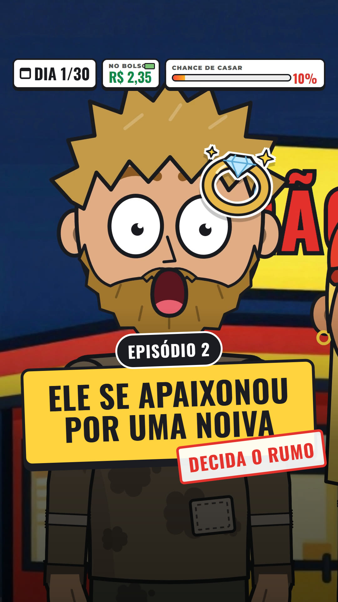
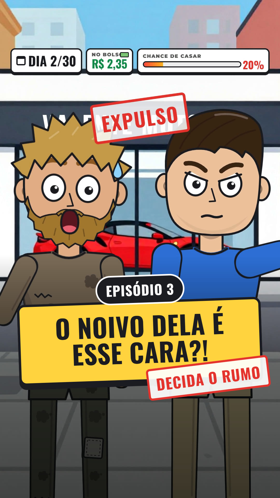
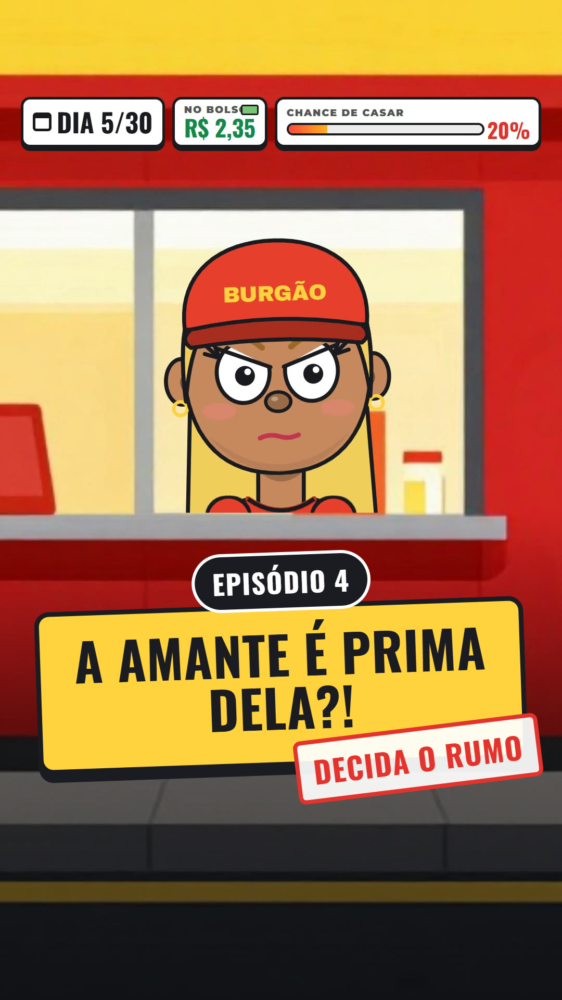

Baixar capaVocês mandaram o herdeiro pro centro. 🏙️ Um dia inteiro pedindo esmola, R$ 2,35 no copo… e à meia-noite uma moça atravessou a rua com um lanche pra ele. Só tem um problema: ela é noiva. 💍 E ainda ofereceu um emprego pra ele no Burgão. E agora, você decide o rumo: 🧹 ACEITA: ele aceita o emprego pra ficar perto dela 🚶 RECUSA: ele continua livre, porque ela é noiva e ele só tem 29 dias Não tem resposta certa. Comenta uma palavra e, se alguém votar diferente, tenta convencer a pessoa aí embaixo! A mais votada vira o episódio 3 👇 Segue a página pra não perder nenhum capítulo. #novelinha #historia #desenhoanimado #milionario #romance #decidaorumo

Baixar capaO herdeiro bilionário virou faxineiro do Burgão pra ficar perto da Lara. 🧹 Derrubou balde, quebrou copo… e fez ela chorar de rir. Até ela mostrar a foto do noivo. 😳 O noivo é o diretor que expulsou ele da própria loja. E que ele viu beijando outra. E agora, você decide o rumo: 🗣️ CONTA: ele conta o que viu, mesmo sem prova 🤐 ESPERA: ele espera ter certeza antes de falar Comenta uma palavra. A mais votada vira o episódio 4! 👇 O episódio 1 tá fixado no perfil. #novelinha #historia #desenhoanimado #milionario #romance #decidaorumo

Baixar capaA amante do noivo dela é… a PRIMA dela. A prima talarica. 😳 E quando a Lara pediu ajuda pra pagar o vestido, ele tava "sem dinheiro"… com três sacolas de grife da prima na mão. 🛍️ No drive-thru, ele ainda humilhou ela: "Você é só uma garçonete." Levantou a mão… e o faxineiro segurou. 🧹✋ Depois ainda disse que ia ficar com a Vanessa, "que é muito melhor". 🤡 E aí a Lara achou uma foto no celular do Tuca. E agora ela quer saber: ele já sabia? Você decide o rumo: 🗣️ CONTA: ele admite que sabia há dias, e ela pode se sentir traída 🤐 MENTE: ele diz que não sabia, e começa tudo com uma mentira Comenta uma palavra. A mais votada vira o episódio 5! 👇 E o Murilo, merece o quê? 👇 Manda pra aquela amiga que namora um Murilo. 👀 #novelinha #historia #desenhoanimado #milionario #romance #decidaorumo
E se o seu noivo te traísse com a sua prima? 😳 O faxineiro do Burgão já sabia de tudo… e esse faxineiro é bilionário. 💰 Ele tomou banho na casa da Lara, saiu DE TOALHA 🚿 e a mãe dela viu tudo por vídeo. Agora ele é o "noivo" e foi chamado pros 90 anos da vó, lá no Nordeste. ✈️🎂 Só que hoje cedo uma cliente deixou o telefone num guardanapo… pro faxineiro. E faltam 25 dias pra ele casar. Você decide o rumo: ✈️ VIAJA: vai com a Lara, de noivo de mentira 📝 FICA: fica na cidade e liga pra moça do guardanapo Comenta uma palavra. A mais votada vira o episódio 6! 👇 Manda pra sua mãe. 😂 #novelinha #historia #desenhoanimado #milionario #romance #decidaorumo